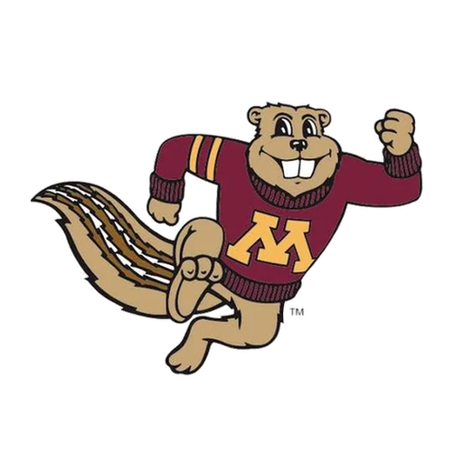
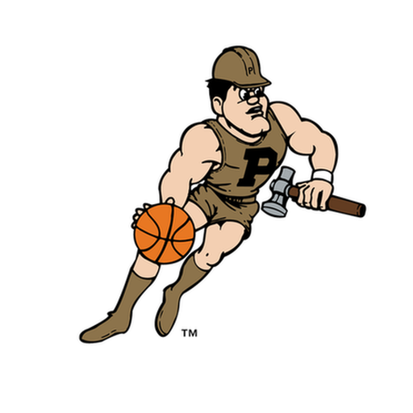

THE DAILY LEDGER
Every Result in the Record
Schedules, scores, and individual game reporting.
National reports, conference dispatches, and the independent RETRO view of the college game.
Independent editorial selection, with every report attributed to its publisher.
Gathering college basketball headlines…
The Analytical Desk / Verified Ratings
Opening independent team ratings…
The Heritage Register
Authentic 1980s Big Ten marks from our locally hosted historical collection. Original team identities, not generated substitutes.
 Indiana
Indiana
Minnesota
PurdueTHE DAILY LEDGER
Schedules, scores, and individual game reporting.
THE NATIONAL TABLE
Elo, conference standings, and independent team ratings.
THE PLAYER REGISTER
Player leaders, rivalries.